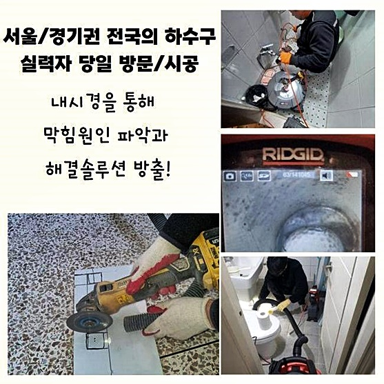
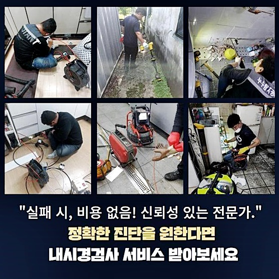
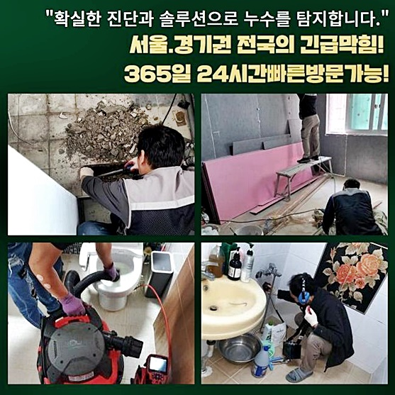
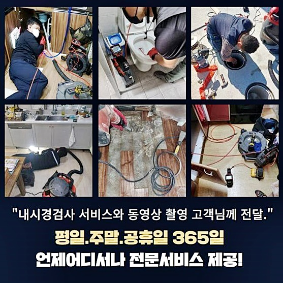
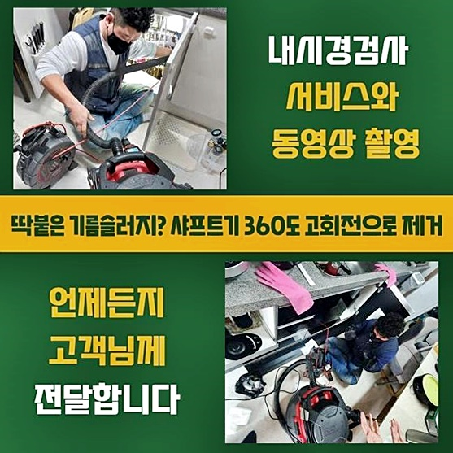
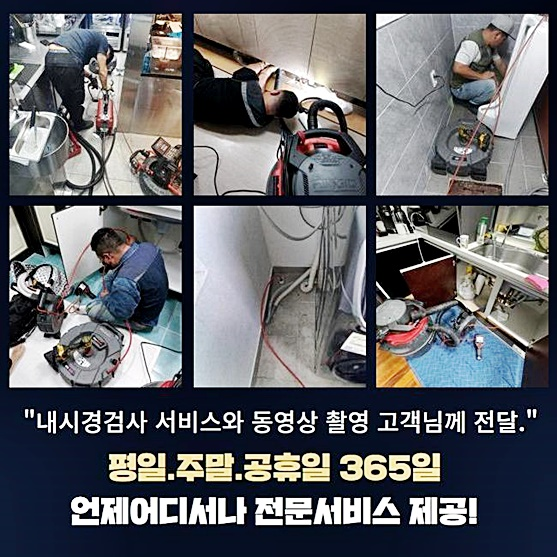

🏠 파주 동패동싱크대뚫음 월롱면 하수구뚫는비용 누수
용인시 처인구 배관막힘 전문 시공 후기

📋 작업 개요
- 위치: 용인시 처인구, 수원시 영통구, 화성시 동탄
- 서비스 유형: 배관막힘, 누수수리, 고압세척, 내시경점검
- 작업 일시:
- 업체명: 하수구수사대 (010-5615-2118)
🔍 문제 상황
파주 동패동싱크대뚫음 월롱면 하수구뚫는비용 누수
건축물들은 건설을 하는 시점에 각 라인들을 더불어 깔기때문에 생활의 부분에서 안락하게 해주죠
반대로 오래될수록 하수도는 내구성이 떨어져버려 2차적인 문제까지 야기시켜요
건축시기가 많이 지난 건물들에서 배수장애가 생긴걸 목격했는데요
이와같이 배관 장애가 얼마만큼 안좋은 영향들을 끼치는지 일러주는 시간들을 가져볼게요
증상을 잠재우기위해서는 전문진의 경험들이 요구되기에 조속히 전문가에게 증상을 완화시키도록 도움들을 청하는게 합리적이겠습니다
노후화가 진행되었을 시 안쪽에 잔해물들이 축적되어 배수를 막아서요
그리고 배수관으로 배출되는 시점에 기름기들과 머리카락뭉치로 대표되는 이물들이 순차적으로 배관 내부로 모이게되는데요
슬러지형태의 오염물은 하수관로 벽측에서 강도를 불려가며 큰 부피를 생성시켜 하수시스템 오류를 자아내죠
이러한 까닭에 배관들의 노후화 문제 시정을 늦추려면 주기성을 갖춘 청소들이 필요하게됩니다 하물며 잔해물이 쌓이지않게 하는것이 중요하겠습니다
시간들을 써서 하수관로를 유지시키는게 생활양식의 편리를 상승시키는데 있어서 중요한 역할을 합니다
그렇지만 잔해가 축적된것을 방치할 시 여러 불편들이 야기될 여지가 충분해 이물을 청소한 다음 청결하게 정비를 실시하는게 중요하죠

🔎 원인 분석
💡 전문가 진단: 정밀 진단 장비를 사용하여 슬러지의 고착 여부를 판명하고 타격/세척 작업을 실시했습니다.
석션기기를 이용해서 잔해들을 청소한 다음 청소를 해주는것은 해결하는것에 중요한 작용을 하는데요
이렇듯 주기성을 갖춘 신경써주는 것을 통한다면 배관 관련 문제들을 예방하는데 도움이 됩니다
이물이 축적된 하수도와 잔해의 흐름들을 살펴서 증세의 원초적인 까닭을 파악해봐야 해요
때문에 절차에 맞게 수리내용을 세운 뒤 행한다라면 제대로된 세척결과들을 보실 수 있으십니다
주변에 있는 클리너와 비슷한 제품을 사용해주시는건 단기간동안 문제들을 완화시켜주지만 근본적인 대처가 되는 일은 드뭅니다
전문인의 대응방식으로 정확한 원인규명과 신속한 처리를 통한다면 하수구막힘 문제들을 완벽하게 시정해냅니다
노하우와 경험들을 응용하여 이물을 제거하면 최상의 작업물을 얻게되실거에요
되도록이면 전문업체들의 해결로서 위험부담없는 세척들을 이어나가는게 중요하겠습니다
그래서 문제들이 발발했을때에 곧바로 전문인과 의뢰해서 해결에 힘써주셔야 합니다
배수구로 흘러가는 유속이 떨어졌다거나 역류문제가 발생되는등 파생적 증상이 야기될때 더욱 중요한데요
대처가 행해지지않을 시 중심부역할을 하는 배수관서 손상이 나타날 확률들이 높고 누수되는 현상으로 번질 수 있겠습니다
일반의 경우에 이물이 축적된 배관은 흡입도구 내시경기계 스케일링 장비들을 이용해요

🔧 작업 과정
이물을 제거시키기위하여 필요에따라 약품을 넣고 석션을 해주거나 고압 세척을 통하여 구석구석 배수로를 고쳐내요
세척을 해줄때 이물을 천천히 제거시키고 적당한 기기를 이용하여 하수도를 구석구석 정비합니다
위험하게 하는건 증상을 안좋게 만들기에 충분해요 내시경기기는 깊은탓에 확인하기에 어려웠던 부분까지 파악하도록 도와주어 없어선 안될 녀석인데요
잔해의 위치들을 살펴서 작업계획을 이행합니다
워터젯 고압세척을 통하여 잔해물을 제대로 제거시킵니다
전문인의 방향으로 알맞게 이물제거를 수행하는것이 중요한데요
전문가다운 접근 방식을 행하면 하수구막힘 증상들을 적재적소 해결합니다
무분별하게 해결에 뛰어들지마시고 전문진의 방향으로 대응방식을 마련해주는게 합리적이겠습니다
하수라인에 오류가 생기면 배수 유속이 저하되고 역류문제들이 발생되므로 중앙시설로 빠지는 속력이 둔화되는 현상이 눈앞에 놓입니다
이러한 과정속에서 관로에선 수축운동이 진행되며 파손등이 야기되므로 예상치못한 복합적인 문제들을 무시할 수 없죠
이러한 까닭에 작업시간을 그어놓지않는게 중요하죠
찾아갔던 장소들에선 화장실공간에서 냄새가 심했고 이로인해 문제들이 이루 말할 수 없었죠
레버들을 누르고 역류하게되는 현상들을 살피기 시작했습니다
오수가 안내려간다거나 꾸준히 거꾸로 솟진않는건지 제대로 체크했습니다
이토록 함으로써 전문업체의 입장에선 문제 이유들을 앎으로서 세척에 오차없이 임할 수 있습니다
잔해들을 사라지게끔하고 외부와 접촉된 위치를 조심하게 떼내어주고 문제의 배관을 관찰했죠
내시경카메라로 심부까지 넣어주어 문제가 있는 부위들을 보고서 어째서 문제를 일으키는건지 원인들을 찾아내기 위해 초집중모드에 들어갔죠
의뢰인에게 작업 결과를 공유하고 안내하고 완벽하게 시정되었음을 확인시켜드렸는데요
어째서 배관 장애가 생긴건지 분석해서 원인들을 청소하고, 무결점의 해결에 관한 대처를 찾는것에 몰두했어요


✅ 작업 완료
때문에 고객의 불편을 잠재우고 안정적인 서비스들을 제공하도록 최선의 방식만을 추구합니다
저희업체가 고객의 가정에 내방하기에 앞서서 다른업체서 다녀갔으나 증세가 변화가 없어 결국 저희전문가들을 불러주셨어요
의뢰인은 저희가 중요하게 여기는 시스템들에 대하여 만족을 표하셨고 뚫지 못했을때 수리비를 내지않으며 사후관리를 지원하는게 좋았다고 하셨죠
다양한 작업방식을 갖추어 고민을 줄여나가 고객의 편리를 지켜드리기위해서 발전을 거듭합니다
문제발생 시점에 저희께 전화하시면 서둘러서 방문드리겠습니다



⚠️ 하수구 배관 막힘 예방 및 관리 가이드
- ✅ 머리카락, 비닐, 물티슈 등 물에 분해되지 않는 이물질은 절대 흘려보내지 마세요.
- ✅ 기름기 많은 식기는 설거지 전 키친타올로 먼저 기름때를 닦아내세요.
- ✅ 주기적으로 배수구에 뜨거운 물을 가득 부어주어 유지방 고착을 방지하세요.
- ✅ 작업 후 1년 이내 재발 시 무상 A/S 보증 서비스를 제공합니다.
💡 핵심 정리
- 확실한 장비 작업(내시경 점검 및 샤프트 스케일링)으로 원인을 뿌리 뽑습니다.
- 작업 후 1년 이내에 동일한 부위 재발 시 100% 무상 A/S 서비스를 보장합니다.
- 서울 · 경기 · 인천 전 지역에 24시간 언제든 긴급 출동할 수 있도록 항시 대기 중입니다.
❓ 자주 묻는 질문 (FAQ)
🚨 용인시 처인구 배관막힘 문제로 고민이신가요?
정확한 원인 진단과 확실한 시공으로 재발 없는 해결을 약속드립니다.
24시간 긴급 출동 | 서울 · 경기 · 인천 전지역 | 1년 내 재발 시 무상 A/S